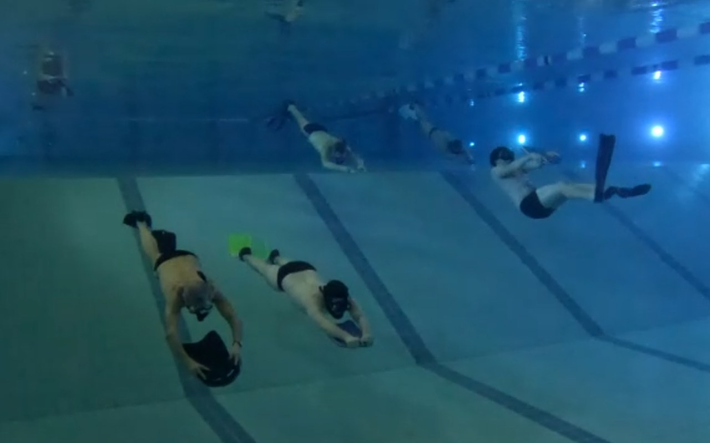
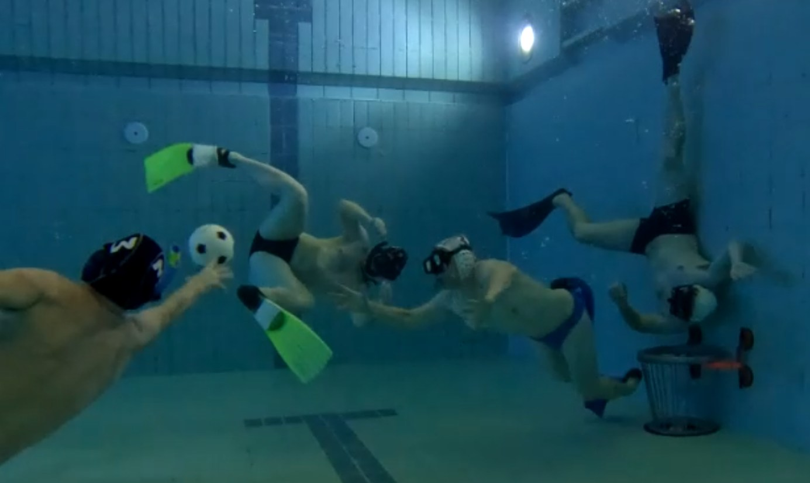
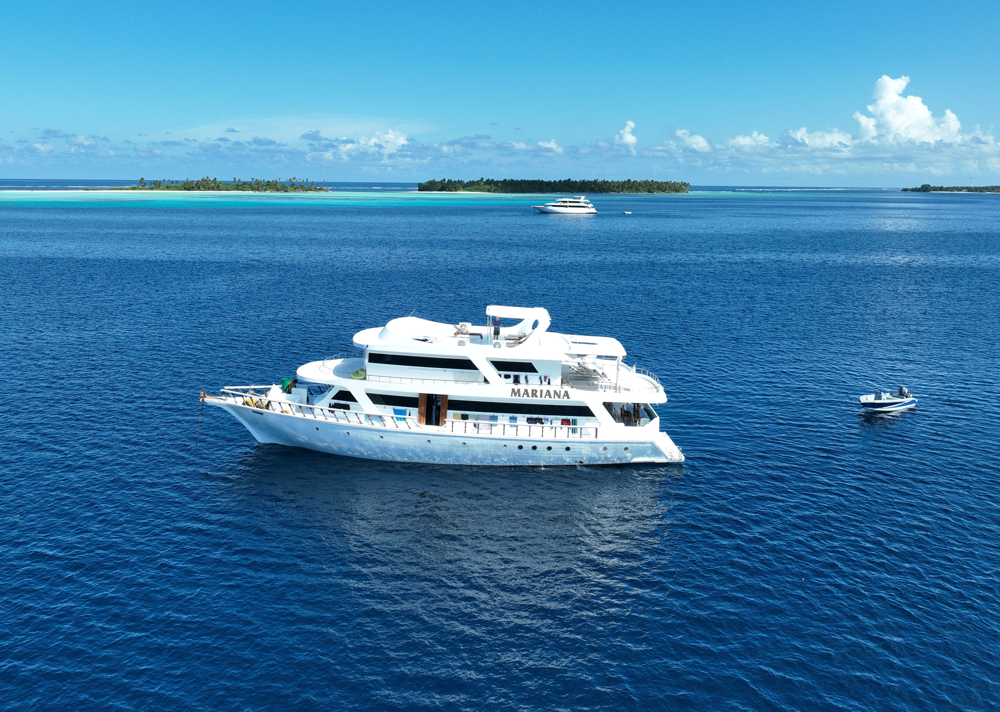

Aktivitäten

Training
Unser Trainingsabend findet regelmäßig mittwochs im Hallenbad Leonberg (20:45 h, Wintermonate) oder im Leobad (19:45 h, Sommermonate) statt. Inhalt des Trainings sind Übungen mit Maske und Schnorchel, um die Apnoefähigkeiten zu trainieren und die Kondition zu verbessern. Ihr seid gerne willkommen, um probeweise am Training teilzunehmen. Bei Interesse kommt direkt zum Training oder meldet euch für weitere Informationen unter sporttauchclub-leonberg@gmx.de. Wer Lust hat, kann den Abend anschließend in gemütlicher Runde ausklingen lassen.
Jugendgruppe
Unsere Jugendgruppe trifft sich immer samstags im Hallenbad Leonberg (Wintermonate) oder im Freibad Leobad (Sommermonate) zum gemeinsamen Training. Neben dem spielerischen Umgang mit Maske, Schnorchel und Flossen, wird an einzelnen Terminen auch der Umgang mit dem Tauchgerät geübt. Darüber hinaus besteht für die Jugendlichen die Möglichkeiten ein Kinder-Tauchsport-Abzeichen des VDST zu erwerben. Dieses beinhaltet neben der Theorie und Ausbildung im Hallen-/Freibad auch Übungstauchgänge im Freigewässer. Jugendliche ab 12 Jahren können Mitglied werden und am Training teilnehmen, sofern sie die körperlichen Voraussetzungen erfüllen. Bei Interesse oder für weitere Informationen meldet euch gerne unter sporttauchclub-leonberg@gmx.de.

Unterwasser Rugby
Neben dem regulären Training bieten wir auch Unterwasser-Rugby an. UW-Rugby ist eine dreidimensionale Ballsportart, bei der ein salzwassergefüllter Ball in den gegnerischen Korb zu spielen ist. Eine gute Kondition ist ebenso gefragt, wie Schnelligkeit und Beweglichkeit unterwasser. UW-Rugby findet bei uns immer eine Stude vor dem Tauchtraining statt. Bei Interesse oder für weitere Informationen meldet euch gerne unter sporttauchclub-leonberg@gmx.de.

Tauchausfahrten
Bei den Tauchausfahrten kann man sein taucherisches Können vertiefen, weitere Praxiserfahrung sammeln und die Unterwasserwelt genießen. Zweimal im Jahr organisieren wir Tauchausfahrten an weiter entfernte Ziele, wie zum Beispiel Mittelmeer, Rotes Meer oder innerhalb von Deutschland. Im Sommer veranstalten wir regelmäßige Tauchtage an einem der hemischen Seen die auch für Nicht-Taucher attraktive Freizeitaktivitäten bieten.